Resilient Campus LAN with First-Hop Failover
A redundant multi-switch, multi-router campus topology engineered to survive link and gateway failures with zero manual intervention. Built and verified end to end in Cisco Packet Tracer, every layer is proven with live command output and a real failover capture.
- Link Aggregation. An LACP EtherChannel bundles two physical links into one logical trunk for added bandwidth and instant resilience if a member link drops.
- Loop-Free Switching. Rapid PVST+ spanning tree elects a root bridge and blocks redundant paths, keeping the Layer 2 domain stable and loop-free.
- First-Hop Redundancy. HSRP presents a single virtual gateway across two routers, failing over automatically when the active router goes down.
- Dynamic Routing. EIGRP converges across the serial WAN link and propagates a redistributed default route for full end-to-end reachability.


Multi-Area OSPF Enterprise WAN
A four-area OSPF-routed enterprise WAN: a backbone Area 0 of core routers interconnecting three branch areas through Area Border Routers. Built and verified end to end in Cisco Packet Tracer, with full adjacencies, inter-area route propagation, and cross-area reachability proven from live output.
- Multi-Area Design. Backbone Area 0 interconnects Areas 1, 2, and 3 through Area Border Routers, isolating each area's topology and keeping link-state databases lean.
- Area Border Routing. R2, R3, and R4 each act as an ABR, translating intra-area routes into inter-area (O IA) routes advertised across the backbone.
- Full-Mesh Backbone. A triangle of point-to-point links between the core routers provides redundant paths, so a single link failure cannot partition the network.
- Verified Convergence. Every router forms FULL adjacencies and learns every remote LAN, confirmed with live routing tables and cross-area reachability tests.
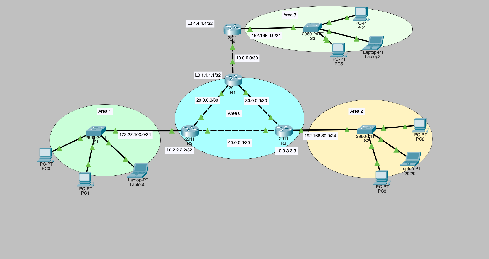
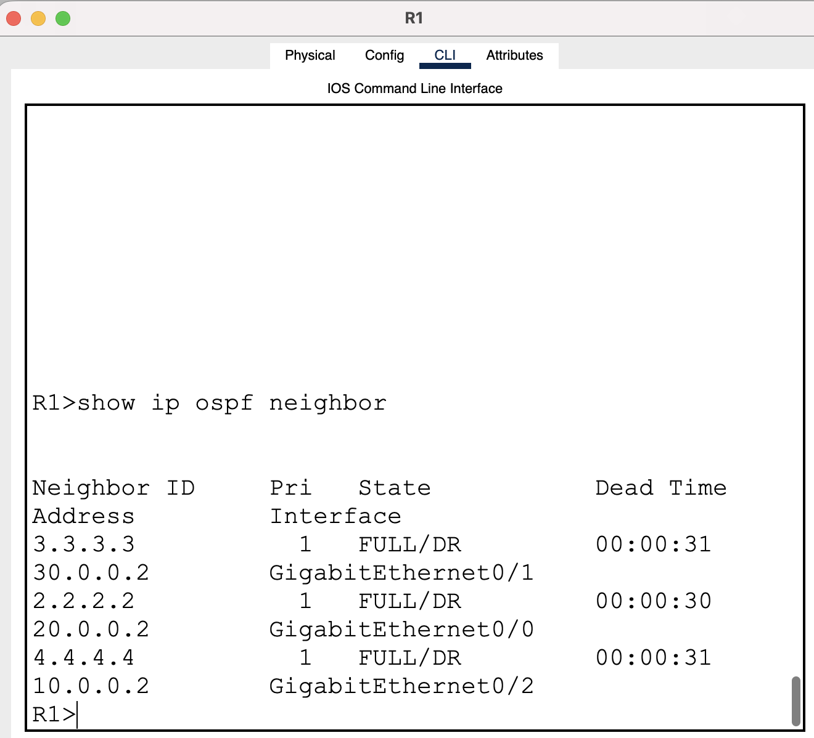
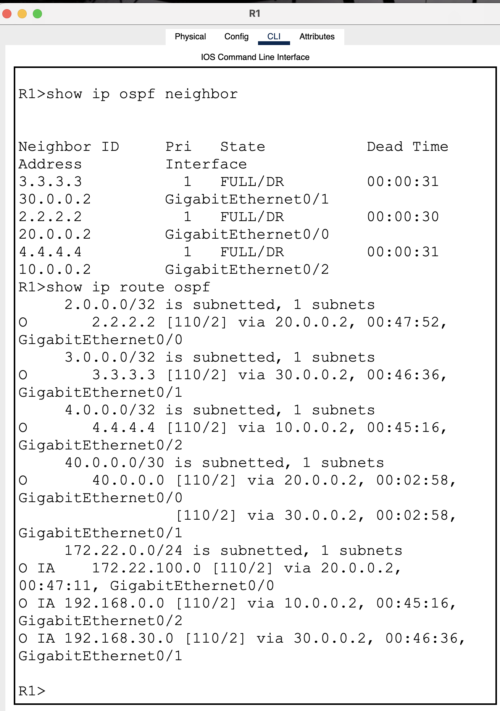
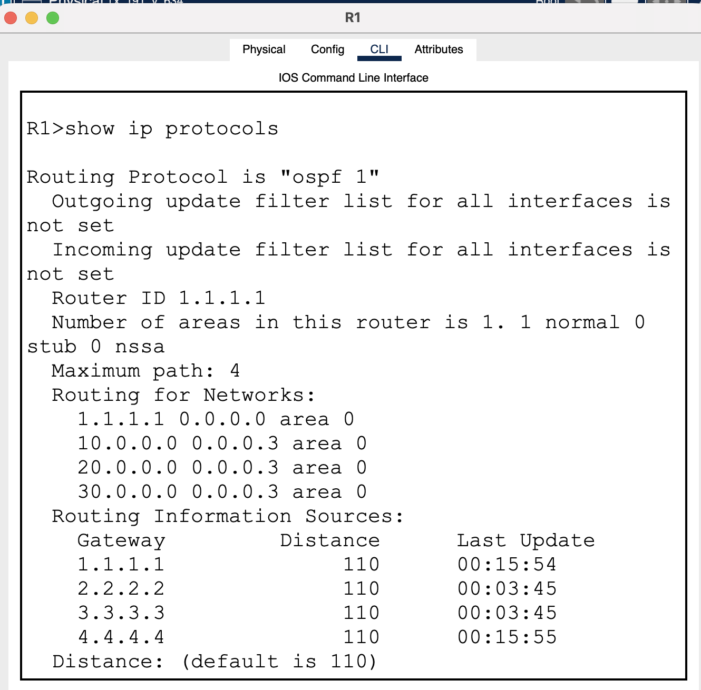
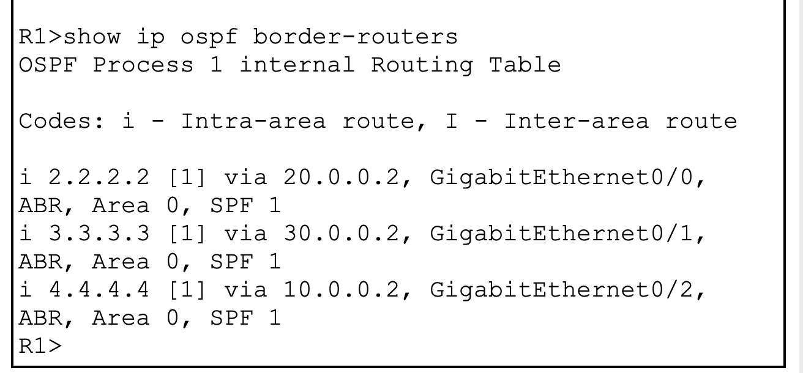
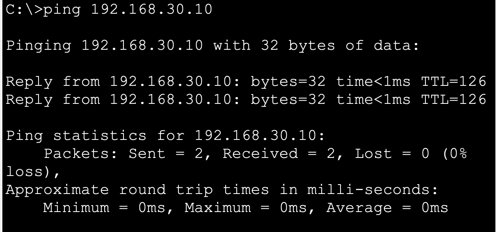
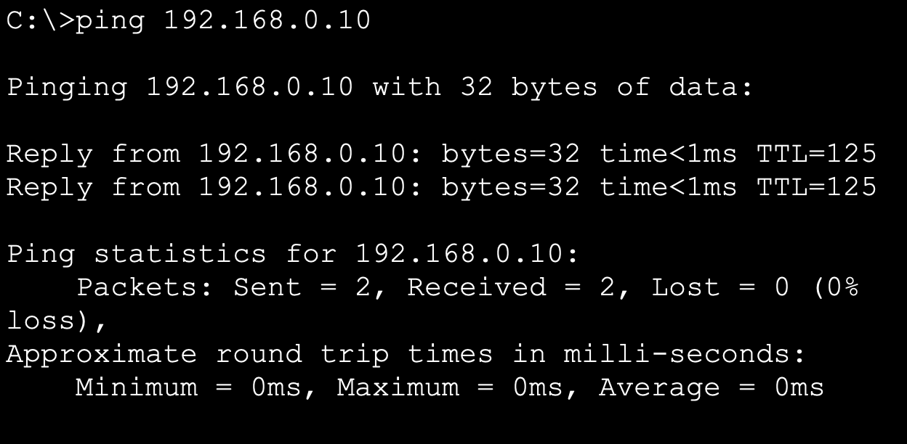
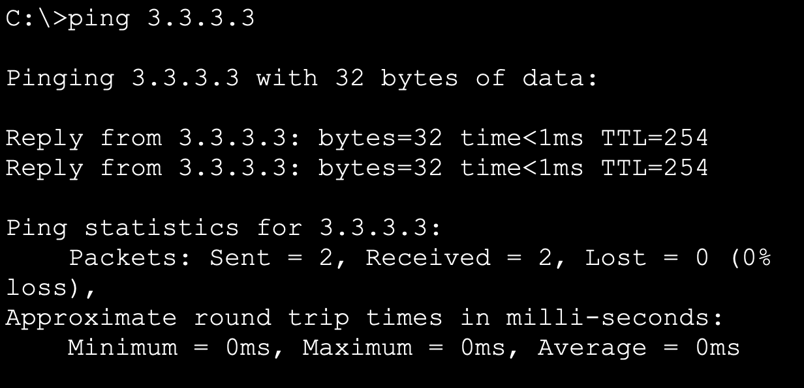
Centralized Wireless LAN with a WLC
A controller-based enterprise wireless deployment: a lightweight access point joined to a Wireless LAN Controller, broadcasting a WPA2-secured SSID, with wireless clients dynamically addressed over DHCP on a dedicated VLAN. Built and verified end to end in Cisco Packet Tracer.
- Controller-Based Architecture. A lightweight AP (LAP) registers to a Wireless LAN Controller, which centrally manages SSIDs, security, and client VLAN assignment.
- WPA2-PSK Security. The "Floor 2 Employees" WLAN is secured with WPA2 and AES encryption, requiring a pre-shared key for clients to associate.
- VLAN-Segmented Clients. Wireless clients land on a dedicated VLAN 5 through the controller's dynamic interface, isolating wireless traffic from the wired management network.
- Dynamic Addressing. Associated clients receive an address automatically via DHCP and reach both the local gateway and a remote server, proving full end-to-end connectivity.
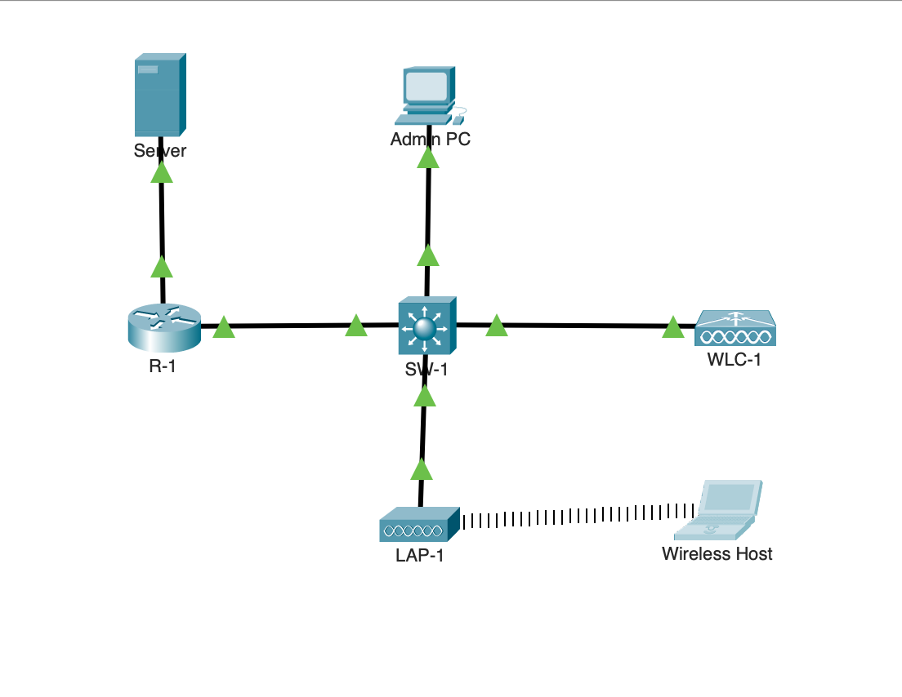
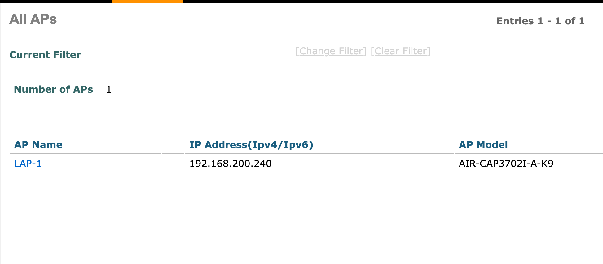
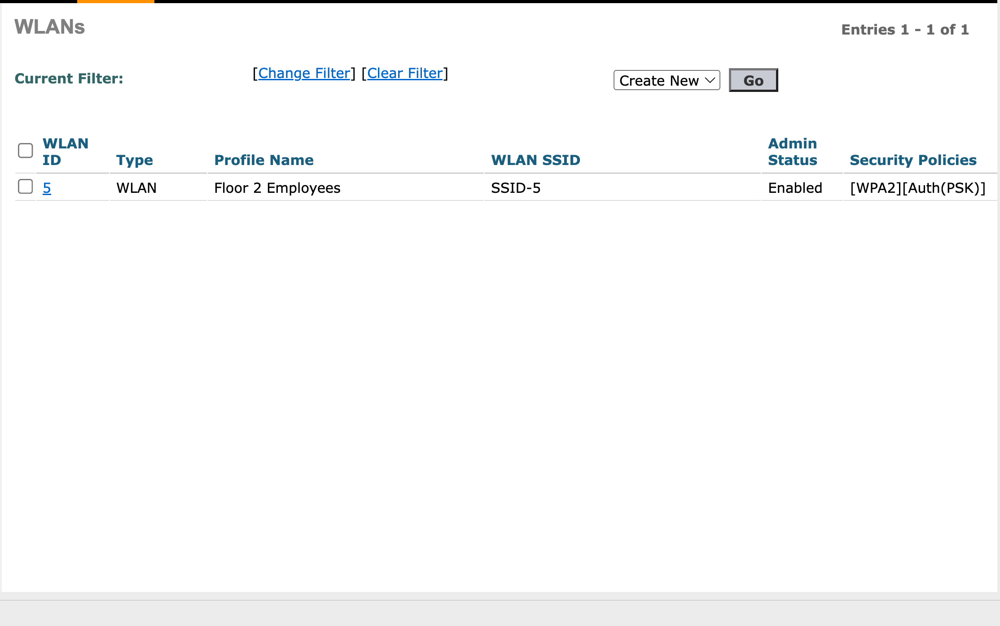
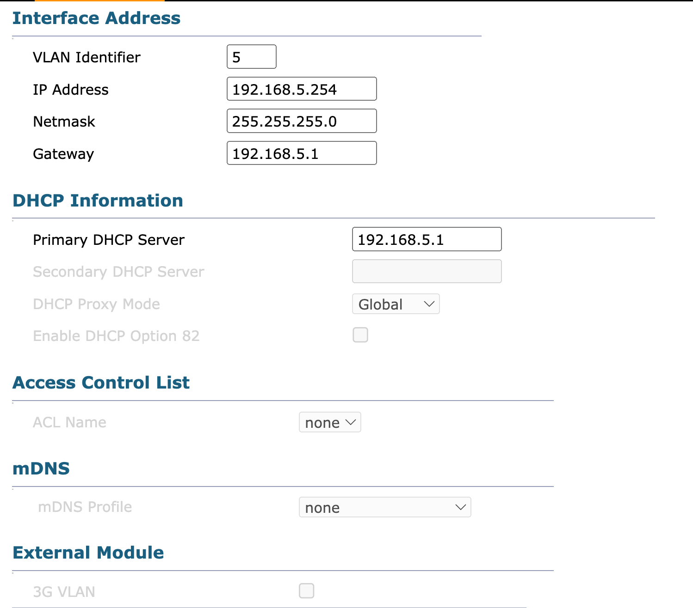
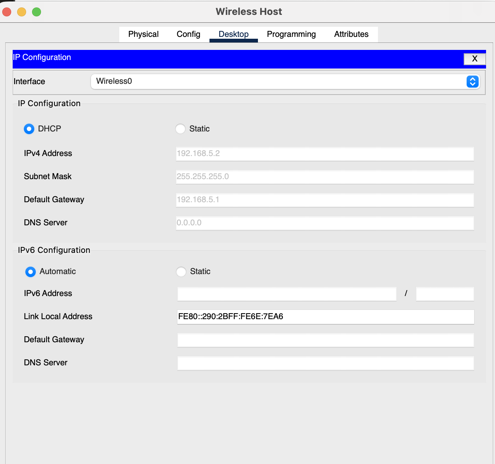
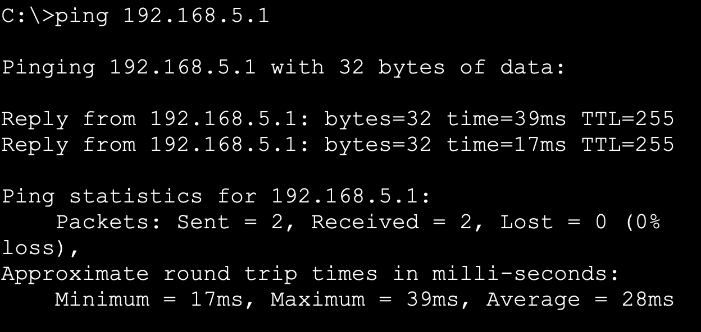
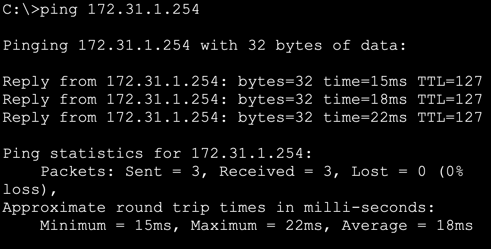